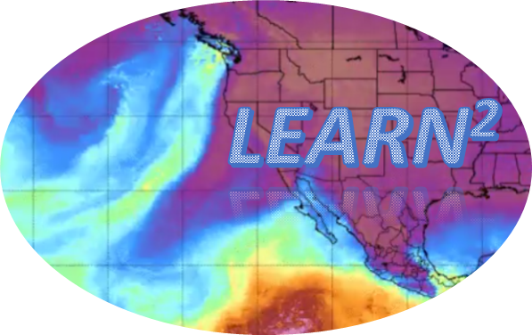
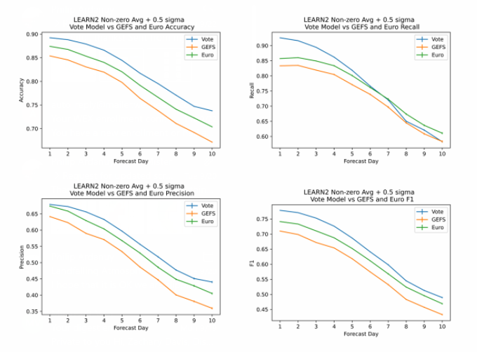
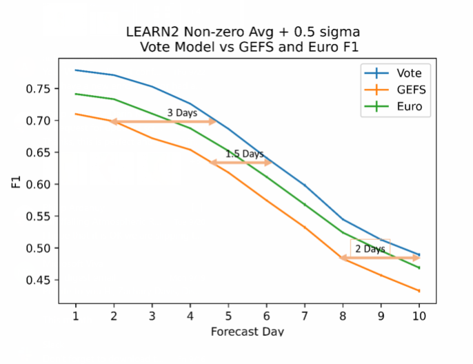

LEARN²
User Guide
Table of Contents
Purpose
Atmospheric rivers are the main phenomena driving extreme rain events in the Western United States during the rainy season (October-April). Their impacts are near the top of episodic weather events in the West. Accurately forecasting rainfall from these events is critical due to the impacts they have on the water supply as well as the severe flooding risks they pose. The greatest challenge of mitigating the associated impacts is reducing uncertainty in the medium-range forecasts (5-10 days). This is because the most critical decisions are made in this window, from water management in reservoir pool reduction to early flood risk communication and preparation. As such, any tool that both reduces uncertainty and pushes higher confidence to longer lead times is especially valuable. Forecasters are continually looking for insights that might support these critical decisions and another tool in the toolbox could be particularly beneficial, especially if, indeed, equivalent forecast skill is pushed out an additional 1 to 2 days.
The Landfalling Event Atmospheric River Neural Network (LEARN2) is a neural-network-based decision support tool that considers Numerical Weather Prediction (NWP) forecast guidance from NOAA/National Centers for Environmental Prediction (NCEP’s) Global Ensemble Forecast System (GEFS) and the European Center for Medium-Range Weather Forecasting Ensembles (ECMWF), remotely sensed fields, and several subseasonal-to-seasonal teleconnection indices, to produce extreme rainfall predictions. In LEARN2, products are run through both convolutional and fully connected neural networks and a novel “voting” algorithm that leverages the power of ensemble forecast systems to predict whether rainfall will exceed thresholds of interest at discrete points in a grid for lookaheads of up to 10 days. The structure of each neural network is determined for each forecast day via custom genetic algorithms to optimize LEARN2 performance.
Rainfall prediction is known to be a difficult problem. One difficulty is that it rains far less frequently than it doesn’t rain. Though performing a cube root on the rainfall begins to address this problem, it remains the case that the dataset is highly unbalanced. Therefore, simple metrics like accuracy of prediction can distort the reported efficacy of the system. To evaluate the LEARN2 system more fairly and compare it against state-of-the-art NWP models, we use the commonly used F1-score. This score attempts to balance “recall” in which the system can correctly identify all positive cases with “precision” in which the system attempts to avoid “false alarms.” The neural networks are tested and trained on 20 years of historical data, split randomly into 80% training and 20% testing data. These splits are performed multiple times and the F1-score determined on each split to achieve a statistically stable average F1-score for the classification behavior of the neural networks.
LEARN2 is trained on Open Data, including the operational Global Ensemble Forecast System (GEFSv12 with 5 ensemble
members) and ECMWF’s (11 ensemble members) reforecasts spanning 2000-2019, using an Amazon Web Services machine with 48
CPUs, 196 GB RAM, 50Gb/s network bandwidth, and 4 NVIDIA Tesla T4 GPUs. LEARN2 is evaluated against the Parameter
elevation Regression on Independent Slopes Model (PRISM) gridded precipitation ground truth dataset. This project's
results are, in fact, highly promising in delivering additional value in this most critical window. Not surprisingly,
the development work has been particularly challenging and has required creative and exhaustive
exploration of the associated forecast space including a variety of input models, AI/ML tools, and model configurations.
Using F1-score as our primary metric, LEARN2’s overall network produces predictions that significantly outperform both
the GEFS and ECMWF, delivering between one and two additional days of lead time for skillful extreme rainfall prediction
when validated on fully independent data (see the below figures). Notably, adding the Pacific/North American (PNA),
Arctic Oscillation (AO), North Atlantic Oscillation (NAO), and El Niño/Southern Oscillation (ENSO) teleconnection
indices introduces additional and complementary forecast-day-dependent predictive skill to the NWP model forecasts.
Over the next several months, we will be operationally evaluating this tool using near-real-time NWP forecast model ensemble members — both NCEP GEFS and ECMWF (the latter via Open Data Creative Commons CC-4.0-BY license and ECMWF Terms of Use).
This project was funded by the NOAA Office of Oceanic and Atmospheric Research (OAR) under the Small Business Innovative Research (SBIR) program.


Intended Audience
The Landfalling Event Atmospheric River Neural Network (LEARN2) forecast tool was developed to provided decision makers, including operational meteorologists and hydrologists, with high-confidence predictions of extreme precipitation events, enabling strategic planning and tactical mitigations in advance of landfall. While this tool was developed with atmospheric-river events in mind, the training is generalized for the west-coastal-state domain for all precipitation events, not solely those directly associated with atmospheric rivers.
Scope
This version of the Users’ Guide describes the LEARN2 tool and how to interact with it to achieve near-real-time forecasts of potential rain events in the western United States for “look-aheads” of 1-10 days.
It does not describe how to maintain the two neural networks and genetic algorithm that are collectively the fundamental basis for the tool—this may be provided in a future version
Learn2 functional guide

The sections below describe 13 features of the LEARN2 GUI and how to interact with them to access the desired extreme precipitation forecast information.
i. Learn2 URL
ii. Version Identifier
iii. Definition Bar
iv. Extreme precipitation forecast panel
v. Daily Rainfall threshold panel
vi. User's guide button
vii. Comment button
viii. Light/Dark switch
ix. Time series panel
x. Likelihood of exceedance table
xi. Control Panel
xii. Forecast day panel
xiii. Cursor utilization
Learn2 URL
The LEARN2 extreme precipitation forecast tool is accessible at https://learn2.innovim.com/
Version Identifier

The version of the tool is identified here (not yet implemented; the current version is V1.0)
Definition bar

Defines the LEARN2 acronym and displays the LEARN2 logo
Extreme precipitation forecast panel

This panel provides the likelihood that the 24-hour predicted precipitation across the grid will exceed the threshold set in the Control Panel. This panel is the primary output of the LEARN2 tool. The forecast domain covers the entirety of Washington and Oregon, the majority of California (except for a portion of the southwest desert region (i.e., Mojave, Death Valley), and the western edge of Idaho. Training of the LEARN2 tool included the entirety of the forecast domain. The display is a colorized map of 24-hour (12Z- 12Z) cumulative precipitation centered on 00Z of the month, day, and year displayed. Other than latitude and longitude, the colors in the display are mapped to seven (7) adjectival descriptors of the likelihood that the cumulative precipitation will exceed the specified threshold. Note that this panel is interactive with the cursor—a mouse click will enable the Time Series Panel (described in part xiii.)
Daily rainfall threshold panel

Because of the spatial variability in climatological rainfall, the implication of cumulative precipitation exceeding a given threshold varies spatially. These values are based upon the PRISM (Parameter- elevation Relationships on Independent Slopes Model) dataset developed by PRISM Climate Group researchers as documented here. We computed the historical average 24-hour cumulative precipitation (inches) for the six months containing the majority of the west coast rainy season (October-March). For every point in the grid, days when there was no measured/assessed precipitation were not included in the averages. Therefore, these values are the average climatological values for rainy days only. This panel is an essential reference for interpreting the quantitative implications of the exceedance likelihoods. The specific PRISM threshold percentile (as set in the Control Panel) is displayed at the top of the panel. As an example, for Initialization at 00Z on October 26, 2022, selection of Day 5 would display cumulative Extreme Precipitation Forecast information for the 24-hour period Oct 30, 2022 (12Z) - Oct 31, 2022 (12Z) in the Extreme Precipitation Forecast Panel.
User's guide button

This button enables access to the User’s Guide.
Comment button

This button enables users to quickly note comments that will enable improvements of the tool in a subsequent version.
Light/Dark Switch

This switch determines the background color of the user interface and can be set based upon user preferences and the ambient background lighting.
Time series panel

Once the user selects a point on the Extreme Precipitation Forecast Panel, this panel displays all five (5) time series of percentile threshold exceedance likelihoods (50%ile, 60%ile, 70%ile. 80%ile, and 90%ile) for all ten (10) forecast days. For the grid element that was selected on the Extreme Precipitation Forecast Panel, the colors of each time series relate to the cumulative precipitation threshold values (inches) which are enumerated immediately above. Note that a mouse click to a particular forecast day within this Time Series Panel will correspondingly change the day displayed in the Extreme Precipitation Forecast Panel.
Likelihood of exceedance table

This table contains three pieces of information: (1) the numerical (%) likelihood of exceedance; (2) the corresponding threshold value (inches); and (3) the latitude and longitude of the center of the grid element selected. This table is active only when a grid point has been selected by the user by a mouse click on the Extreme Precipitation Forecast Panel.
Control panel

This panel enables the user to select across four (4) different attributes of the LEARN2 forecast tool: (1) Initialization ̶ this widget allows the user to switch between the most recent NWP model 00Z initiatlization as well as four (4) previous 00Z initializations to examine how the forecasts are changing with time and more-or-less-recent information and their stability; (2) Threshold ̶ this widget enables the use to select which 24-hour cumulative precipitation percentile threshold exceedance likelihoods (50%ile, 60%ile, 70%ile. 80%ile, and 90%ile) to consider; (3) Model ̶ while the primary output of the LEARN2 tool is the Voting model, this widget permits the user to consider each of the four input models: the Convolutional model, the Dense Network model, the operational ECMWF medium-range forecast model, and the operational NWS/NCEP GEFSv12 model ; and (4) Resolution ̶ although the trained resolution of the LEARN2 is on a native 1.5-degree latitude/longitude grid, we are able to make use of higher-resolution data available from the NWP centers. By selecting High resolution, the display is downscaled to 0.25-degree resolution. This provides considerable additional spatial information, though with some reduction in local accuracy. Toggling between the two spatial resolutions will provide a sense of the relative information content.
Forecast day control panel

This interactive widget enables the selection of the forecasted day of interest to be displayed in the Extreme Precipitation Forecast Panel. The LEARN2 tool is operable for forecasts in the range of 1-10 days in advance of the date and time of initialization (as displayed in the Control Panel) of the pair of Numerical Weather Prediction (NWP) models used in this application.
Cursor utilization

When hovering over the Extreme Precipitation Forecast Panel, a mouse click will select a grid square of interest. The time series of predicted exceedance likelihoods for that grid element will display in the Time Series Panel for all ten (10) forecast days and all five (5) available percentiles (50%ile to 90%ile).
Troubleshooting
TBD
FAQ
What is the general description of this tool?
Predictions made by the LEARN2 system are the result of postprocessing and recombining ECMWF forecasts, GEFS forecasts, and subseasonal-to-seasonal teleconnection indices using a neural network specifically trained to identify rainfall events exceeding defined thresholds of interest. The neural network is tested and trained on 20 years of historical data, split randomly into 80% training and 20% testing data. These splits are performed multiple times and the F1-score (calculated as described below) on each split to achieve a statistically stable average F1-score for the classification behavior of the neural network.
Broadly speaking, training the neural network consists of series of forwards and backwards passes through the network. With each forward pass through the network, input data is used to make a prediction of rainfall exceedance at the output layer of the network. As the data passes through the network, weights within the network as well as biased “activation functions” determine the result at the output layer. This prediction is then compared to a ground truth provided by the PRISM dataset. The success or failure of the predictions informs the way in which the weights and biases within the network are adjusted on the subsequent backwards pass through the network. The process then repeats until the process is terminated by a stopping condition (e.g., a fixed number of forward/backward passes have been made or evidence of overfitting begins to appear).
The LEARN2 system is composed of two different neural networks combined in a “voting” algorithm. All of which are described below.
What are the inputs to the tool?
Inputs provided to the neural network come in two types: reforecast products and teleconnection products. Teleconnections consist of a single number representing the magnitude of the teleconnection index for date from which the prediction is being made. Reforecast products come from the GEFS and ECMWF and are one of: 24-hour cumulative rain, temperature, IVT, convergence, vorticity, geopotential height. Each of these products are Z-normalized over the training data. That is, they are converted such that the mean is removed and then the product is normalized by the standard deviation. In the case of 24-hour rain accumulation, we take the cube root before performing the Z-normalization in an effort to better approximate a Gaussian distribution. The net result is that all input products are on approximately the same scale, improving the functionality of the neural network. Because the GEFS and ECMWF reforecasts are ensemble models, we examine the raw values from each ensemble member, as well as the mean and standard deviation for each product. For details on which products are selected, the geographic area in which they are used and the predictively lookaheads used, refer to the Genetic Algorithm section of this document (below).
What are the output products of the tool?
The output of the neural network is a one-dimensional vector. Each value in the vector represents a point in our prediction grid. In the terminology of classification, we have reduced the problem to a multi-class binary classification problem. That is, given a particular set of inputs, we aim to discover to which of the possible classes does this input belong (if any). For this problem, each class is “anomalous rainfall at a specified latitude, longitude pair.” The ground truth is created by examining each point of interest (a regular grid of points in Washington, Oregon, and California) and determining the average and standard deviation of the 24-hour rainfall (removing 0 rain days) at that point. A positive case is defined as a specified number of standard deviations (σ) above the mean. LEARN2 has been trained using σ values of 0, 0.5, 1, 1.5, and 2. The output of neural network for a given point will fall between 0 and 1. Numbers closer to 1 indicate a prediction of the positive class (i.e., the network predicts rainfall amounts will cross the mean+ σ threshold at that point).
What is the definition of the “F1-score”?
Rainfall prediction is known to be a difficult problem. One difficulty is that it rains far less than it doesn’t rain. Though performing a cube root on the rainfall begins to address this problem, it remains the case that the dataset is highly unbalanced. Therefore, simple metrics like accuracy of prediction can distort the reported efficacy of the system. To evaluate the LEARN2 system more fairly and compare it against state-of-the-art weather prediction such as GEFS and ECMWF, we use the commonly used F1-score. This score attempts to balance “recall” in which the system can correctly identify all positive cases with “precision” in which the system attempts to avoid “false alarms.” Expressed in terms of true positives (TP), false positives (FP), and false negatives (FN), the F1-score can be computed as: F_1=TP/(TP+0.5*(FP+FN) )
What is the Dense Network?
This network is a fully-connected neural network. Each two-dimensional reforecast product input is run independently through its own fully-connected, 24-node network, followed by a batch normalization to help prevent over fitting. The teleconnection input (if any) is run through a smaller, 3-node dense layer. Subsequently, all independent dense networks are flattened and concatenated. The concatenated inputs are run through a another fully-connected, 48-node network with a rectified linear activation function. The final layer in the dense network is another fully connected layer with a node for each output class. This final layer uses a sigmoid activation function to ensure that all outputs fall in the range 0 to 1. This network is a Phase-II refinement on the similar Phase-I network.
What is the Convolutional Network?
This network uses a convolutional kernel to convolve subsets of the input before passing entering the fully-connection portions of the neural network. Up to three products from a given source may be convolved together to find patterns across products that may be useful in predicting rain. The input to the convolution network is a series of three-dimensional sets of reforecast products. The convolution layer for each set of products consists of 8 filters with 3x3x3 kernels with a stride of 1 in each dimension. Subsequent to this convolution, the network behaves similarly to the dense network. All of the networks are flattened and concatenated (possibly with a teleconnection). As in the dense network, the concatenated inputs are run through a fully-connected, 48-node network with a rectified linear activation function. Once again, the final layer in the network is a fully-connected layer with a node for each output class. This final layer again uses a sigmoid activation function to ensure that all outputs fall in the range 0 to 1. Though a convolutional network appeared in the Phase-I system, this configuration in new for the second reporting period of the Phase-II system.
How does the Voting Algorithm work?
Ultimately, LEARN2 provides a binary prediction based on a final “voting” algorithm. This algorithm has been more fully explored in this quarter of Phase-II. In this algorithm, the results of the Dense and Convolutional networks (described above) are combined with a prediction from the ECMWF ensemble model to provide a final, binary prediction of rain. Experiments with the GEFS model were not shown to improve the performance of this model and so are omitted from the final algorithm. To combine the Dense, Convolution, and ECMWF model, the three models need to be on the same scale. The Dense and Convolutional models each pass through a final sigmoid activation function and are therefore guaranteed to be in the range 0 to 1. However, ECMWF provides as continuous, not a binary prediction of rainfall. Further, as an ensemble model, it provides multiple predictions. Our solution is to threshold each of the members of the ensemble: 0 indicates that the ensemble member predicts rainfall quantities below the threshold while 1 indicates that the ensemble member predicts rainfall above the threshold. Averaging the threshold ensemble members then guarantees a number a number between 0 and 1 (in essence providing the percentage of ensemble members predicting anomalous rain). We then combine the Dense, Convolution, and ECMWF models via an average. The final result is a likelihood of rain, where 0 indicates a confident prediction of no rain while 1 indicated very high confidence of rain.
To compare the voting algorithm against ECMWF, and GEFS, we threshold the predictions made by each of the three systems. Although each system tips from more confident in no rain to more confident in rain at 0.5, a plot of precision vs. recall indicates that all three system err on the side of caution, maximizing precision at the expensive of recall (i.e., ensuring that there are few false alarms while missing heavy rain events). In fact, selecting a likelihood threshold of 0.3 provides the best F1 score for each system by capture more heavy rain events at the expensive of some false positives. Using 0.3 as a likelihood threshold, we have seen that the LEARN2 system outperforms the GEFS by providing 2-3 days more lead time with predictions and the ECMWF by 1-2 days.
What is the Genetic Algorithm and how does it work?
At the heart of the efficacy of the LEARN2 system are the input parameters to the neural networks. In the Phase-I system, these inputs were chosen according to controlled information exclusion experiments to determine the candidate reanalysis products for optimum neural network performance. However, in Phase-II, the state space for such explorations has grown much larger.
In addition to reanalysis products from the GEFS, we have added those products from the ECMWF. Since any combination of products is viable, doubling the number of products more than squares the number of input combinations. Additionally, we have increased the domain of those products to encompass nearly the entirety of the Pacific Ocean north of the equator. This has two effects: (1) it is likely that only subsets of the domain are more effective as inputs to the neural network, and (2) the neural networks described previously are much larger, requiring more resources to train. Subsetting the domain further increases the number of viable inputs, since each subset is now a possible independent input. The increase in size, meanwhile, ensures that each training/testing pass takes significantly more resources (e.g., time, memory, etc.) to compute.
In effect, the possible parameters as input to the neural networks are no longer feasible to explore through exhaustive search. To this end, this portion of Phase-II has introduced the use of a genetic algorithm to explore the space of possible inputs to the neural network.
Genetic algorithms are inspired by the biological process of evolution. In our algorithm, a given selection of inputs constitutes an “individual.” A group of individuals constitute a “population.” In each “generation,” the best performing individuals (i.e., the inputs resulting in the best performing neural network) in the population are determined. The highest performers move into the next population along with newly generated individuals created using the high performers as a template but with slight modifications (termed “mutations”). In this way, the genetic algorithm can explore the entirety of the input space randomly, focusing attention on segments of the space that perform the most effectively. The algorithm is presented in more detail below.
What is a “Gene”?
An individual in our genetic algorithm is composed of a set of “genes.” We have empirically determined that eight genes is an optimal number of genes from a performance/efficiency standpoint. These eight genes come in two types, seven “product genes” and one “teleconnection gene.” Any one of these genes may also be turned “off,” meaning it is not selected. Thus, the number of inputs to a given neural network may range from one to eight (inclusive).
What is a “Product Gene”?
A product gene determines which products from the ECMWF or GEFS to use as inputs to the neural network. There are two subcomponents of a product gene: the “box” and the “source.” The box constitutes the area of the earth over which the product values are used and the resolution of the product in question. The northwest corner of the box is no further north than 60N and no further west than 100E. The southeast corner of the box in no further south than 15S and no further east than 110W. Resolution may be one of 1.5, 3, or 4.5. The source is composed of the data source (GEFS, ECMWF, or None), a selection of product types to be used, and a lookahead. The possible product types are 24-hour cumulative rain, temperature, IVT, convergence, vorticity, geopotential height, or none. For a dense network, only a single product type can be selected and both the mean and standard deviation are used. For a convolutional network, up to three products may be convolved together from the same source. If more than one product is used, the means are convolved. A single product results in convolving the mean with the standard deviation. Lookahead is an integer from one to fourteen.
What is a “Teleconnection Gene”?
A teleconnection gene determines which teleconnection to add to the network. There is a single subcomponent, “name.” The name can be one of PNA, AO, NAO, QBO, Nino, none. There is no difference in how teleconnections are inserted into a neural network, regardless of network type.
How does "Population Creation" work?
The initial population is composed of individuals with randomly selected genes. Subsequently, the top two performing individuals in a population move unchanged into the next generation. The remainder of the generation consists of “offspring” of the top two individuals. These offspring are created through a process of genetic crossover and mutation. When using the genetic algorithm to optimize the dense network, we create 20 individuals per generation. The convolutional network is a more resource intensive network and our system can only support 12 individuals per generation. We run the algorithm over 8 generations, finding this this be an acceptable tradeoff between performance and resource utilization.
How does "Crossover" work?
We adopt a uniform crossover strategy as the first step of genetic recombination. When creating a new individual for the generation, we traverse the set of genes of the two parents. For each subcomponent of the new individual, we select one of the two parents to be the donor parent, using an equal probability for each parent. Thus, the new individual is a uniform mixture of the subcomponents of the genes of the parents.
How does "Mutation" work?
Once the selection of donor genes is achieved, the individual undergoes a mutation process to further explore the input space. In the mutation process, each gene has a 10% chance of undergoing a mutation. When a gene is selected for mutation, a random selection of the properties of that gene are perturbed in a random way. The following properties are randomly reselected from the set of available values for the property: resolution, data source, product type, teleconnection name. The northeast and southwest corners may be shifted by up to 10 degrees in any direction (subject to remaining withing the greater bounding box). The lookahead may shift forward or backwards by up to three days (subject to remaining within the acceptable range). Note that during the process of mutation, genes that had previously been turned “off” (by selecting none as a data source or product type) may be turned “on” or vice versa.
What is the "Fitness Function"?
Selecting which individuals perform “best” in our genetic algorithm requires us to define a fitness function. An individual that scores higher on our fitness function it more likely to have its genes used in the creation of the next generation. Our objective is to produce neural networks with the best possible F¬1-score. Thus, the fitness function we have selected is the average F1-score of 16 neural networks. Each network uses inputs as defined by the genes of the individual and is trained on a random 80% of our available data. The F1-score is calculated on the remaining 20%.